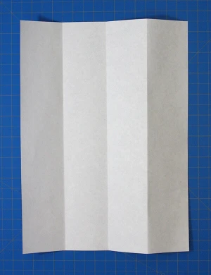
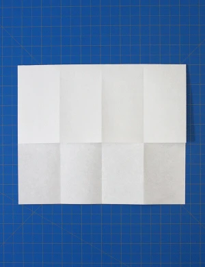
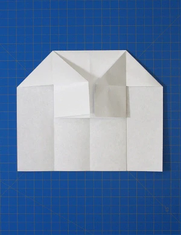
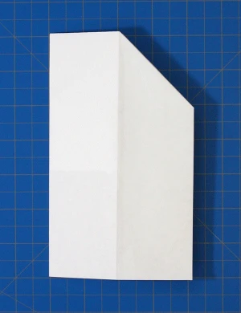
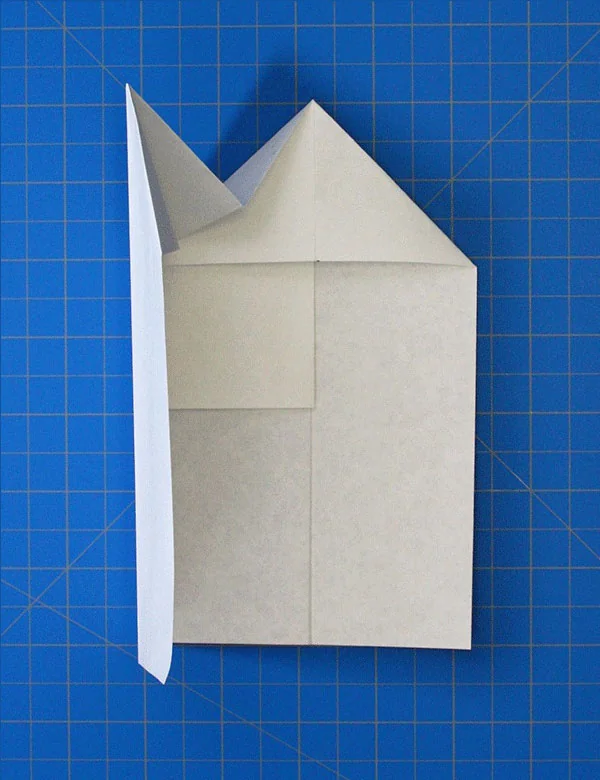
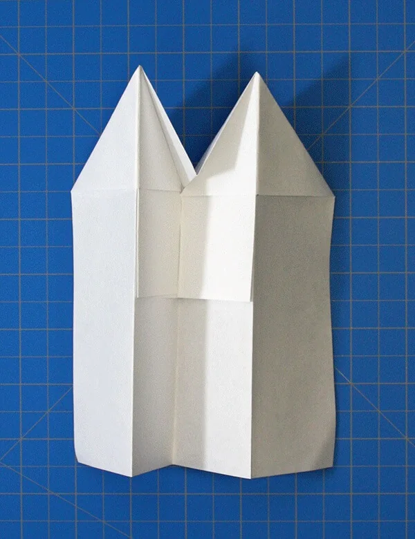

1Step 1
Crease the sheet in half, then fold that packet in half again.
Hangar figures for this design — distance in metres, hang time in seconds, and rank among scored planes — before you fold.
| Metric | Measured result | Hangar rank |
|---|---|---|
| Distance | 8–11 m (26–36 ft) | #34 of 37 |
| Hang time | 6–8 s | #8 of 36 |
Test conditions (same for every design we score): 70–80 gsm Letter or A4 printer paper; standing release at about 1.6 m shoulder height; calm indoor air (no wind); each thrower gets 10 attempts and we keep their best throw. Ranks compare only designs that cleared the scoring threshold under this protocol.

Crease the sheet in half, then fold that packet in half again.

Open the earlier folds. Mark about 4 inches (10 cm) from the top and fold down on that mark.

Fold both top corners in to the nearest crease.

Open the sheet, then accordion-tuck the top corners inside.

Tuck both outer flaps into the midline.

Close the airplane toward yourself.

Accordion fold the top point into the inside, as in the photo.

Finally, fold both wings out to create the wings as shown in the guide.
Our measured hangar result is 8–11 metres (about 26–36 feet), ranking #34 of 37 distance-rated designs. See the measured results table above the folding steps for metres, hangar rank, and the fixed protocol (70–80 gsm paper, ~1.6 m shoulder-height release, calm air, best of 10 throws per person).
Our measured hang time is 6–8 seconds, #8 of 36 for time aloft. See the measured results table above the folding steps for metres, hangar rank, and the fixed protocol (70–80 gsm paper, ~1.6 m shoulder-height release, calm air, best of 10 throws per person).
It is best for long floating glides. Folding skill is beginner. Use Letter & A4, 8 steps, hands only.
Launch softly at a slight upward angle, ideally from a high point, and let the plane glide instead of forcing it.